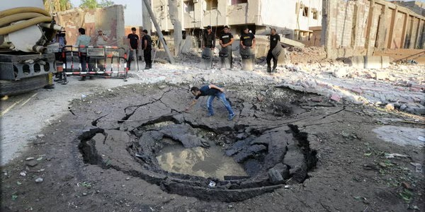
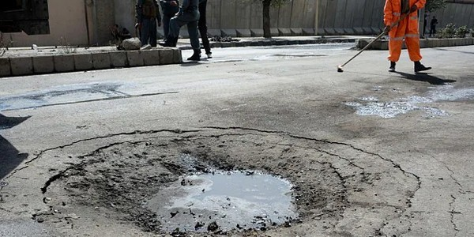

ZENCHOU — Last Thursday evening, a quiet residential street a stone's throw from the Shindou Investigative building became a battlefield. By the time it was over, the grass had been burned black, the concrete had cracked through, and at least six people were lying in the street or limping away from it.
All of it came from one woman. She is known as Akiko, and she is a member of the Tranquil Blades.
This reporter didn't have to piece the story together secondhand. I was sitting on a bench nearby when it started, and I was nearly caught in the blast myself... twice.
How It Began
The first sign of trouble was a body hitting the asphalt.
A young winged woman named Kyveli came staggering down the road, badly burned from head to toe, and collapsed unconscious in the middle of the street. She still had a tight grip on her sword.
Speaking to High Stakes Media days later, Kyveli explained how she got that way. She had been picking through trash in the downtown residential area when Akiko approached her and claimed the entire area as her own, under her rule. Kyveli gave back what she had collected. She says she even tried to talk her way into a landscaping job, since the area looked so run down.
Then the questions turned to where Kyveli came from. According to her, Akiko threatened to keep her from leaving and to beat her to a pulp. When she tried to leave anyway, Akiko grabbed her.
"So I slashed at her with my sword to knock her away," Kyveli said, "and then she exploded everything and beat me down, including when I tried to flee again."
Akiko has since claimed that Kyveli "assaulted me first." Our readers can decide for themselves what it means to strike first when you have already been threatened and physically seized.
"She Can Receive Medical Care After She Answers My Questions"
Bystanders acted first. An Inugami named Homura dragged Kyveli out of the road so she wouldn't be run over. Ramses, a friend of Kyveli's, stepped in to carry her to a doctor. Another friend, Amano Akemi, stood beside him.
Then Akiko arrived.
She made her intentions perfectly clear. "She can receive medical care after she answers my questions," she told them, and warned them to move.
They didn't have time to. Akiko launched herself at the group, and her movement alone set off a massive explosion right in the middle of the people trying to get a wounded woman to safety. She hadn't even released her sword. As she put it in her own words that night: if there was property damage, so be it.
The blast caught Ramses, Akemi and Homura. It also caught Mark Heart and Diana Swarovski of the Sanmittai, who had been passing through. According to Akemi, it even hit one of Akiko's own allies.
"She beat someone up, tried to drag them off, then bombed all of us when we stood in her way," Akemi told us. "That's about it."
A Dying Star, A Dozen Feet From Shindou
What followed is best described as a rampage.
Heart and Swarovski took the fight to Akiko directly, and to their credit, Heart actually managed to land a blow. Homura threw herself at Akiko over and over, and kept going long after her body had given out. Ramses and Akemi took on Akiko's associate, Park Jiu, who had joined the fight on her side, even after getting caught in her initial blast.
Akiko answered with more explosions. She triggered two blasts at a time, and she threw up a barrier that shrugged off nearly everything thrown at it. Then she announced her next move to the crowd.
"You people ever heard of a dying star?" she asked. "It's like that, but in the palm of my hand."
The blast that followed threw Heart through the air, slammed Swarovski into a tree with her wings on fire, and left Homura coughing up blood. This reporter was only spared because a passerby named Suigin was kind enough to carry me out of the way, for the second time that evening.
All of this happened not even a dozen feet from the Shindou Investigative building.
The street did not fare much better than the people on it. By the time the smoke cleared, the grass had been scorched down to the dirt, the asphalt was split open and cratered, the sidewalks were cracked through, and the trees along the block had been burned black. Buildings that had stood there that morning were left as little more than rubble. Akiko had already told us how much she cared about that, of course. If there was property damage, so be it.

If there is any stroke of luck to be found in all of this, it is that the street was empty of ordinary people. The block's mundane residents had already fled the scene by the time the first explosion went off. Had they not... this reporter does not like to think about what blasts of that size would have done to people with no spiritual reserves of their own to protect them. The adepts caught in the fight walked away burned and bloodied. Ordinary folk would not have walked away at all.
The Government Arrives
Akiko's rampage did not end because she ran out of steam. It ended because Ji-Hua, head of Shindou Investigative and now one half of the joint leadership of the mayor's office, walked out of that building with her agents.
When confronted, Akiko told Ji-Hua to "do your job instead of throwing around blind threats," and promised to "stop holding back" if anyone pursued her. She then put up another barrier to cut Akemi off from the unconscious Kyveli and tried to snatch Kyveli herself on her way out.
She didn't get far. Ji-Hua appeared inside the barrier in an instant and took Akiko by the collar. "Don't make this harder than it has to be," she told her.
High Stakes Media will give credit where it is due. Ji-Hua's intervention almost certainly saved lives. Even Akemi, who has no love for how the matter has been handled since, told us: "We're thankful for the help from Ji-Hua."
"Maybe they can show up earlier when she bombs another city block." — Amano Akemi
Who Pays?
Both Akiko and Kyveli were taken into custody. The wounded were treated on the spot by Raiu Shunkan, and the cost of their treatment was covered privately. This outlet's owner paid for everyone's treatment except the two women at the center of the affair.
And this is where the story stops making sense.
Kyveli, the woman who was threatened, grabbed, burned, and hunted down the street, says she was jailed for a day and now owes a fine, community service, and favors. Akiko, meanwhile, appears to be walking around free.

"Kyveli isn't at fault," Akemi said. "Jailing her for a day, then putting a fine on her, is unjust."
"I don't know why Akiko is allowed to just walk around free again," she continued. "After everything she did, I hope they at least have her under watch or something."
She also raised a question that this reporter has not been able to stop asking: why did the government let her walk it off after all that destruction, when she had just tried to run from them?
Ramses, ever good-natured, put the night more simply. "We were attempting to get her somewhere safe when that lady blew up everything," he said. They fought back, he explained, "to prevent our friend from being kidnapped."
Those Who Stood In The Way
Asked whether the Sanmittai had helped or made things worse, Akemi was blunt. "They tried. That Mark guy hurt her, at least," she said, which is more than most can claim. She suggested that the pair, Heart and Swarovski, only got involved because the first explosion hit them too.
Swarovski herself, speaking later from the ruined block, described the night as "all I could do to put myself between that girl and the people she was exploding." She was less measured about the Tranquil Blades as a whole, accusing the organization of working to destabilize the region. High Stakes Media has not been able to verify that claim. We will say only that the Blades have done little to dispel it in recent days, regardless of their original purpose in Zenchou.
Homura, now recovered, offered her own verdict: "The exploder lady should be locked in a cage with the key thrown away."
The Bottom Line
High Stakes Media will say it plainly.
While the Tranquil Blades do claim ownership of the downtown residential territory, Akiko seems to have overstepped. When a stranger wouldn't answer her questions, she hunted her down. When that stranger's friends tried to carry her to a doctor, she bombed them and several others indiscriminately. When she was finally stopped, she was released, and the woman she hunted was the one handed the bill.
It bears repeating: the only reason this story is not a mundane death toll is that the neighborhood's ordinary residents had the good sense to run before she arrived. That was luck, and nothing more. The people of Zenchou should not have to rely on it.
Anyone who would set off that kind of destruction in a densely populated area, out of recklessness or plain indifference, is a danger to Zenchou and its people. For that reason, this reporter has formally issued a bounty on Akiko of the Tranquil Blades.
Ten million yen. For her head.
High Stakes Media will continue to follow the government's handling of this incident. Tips can be sent to %Gambling_Queen on SuperNat.